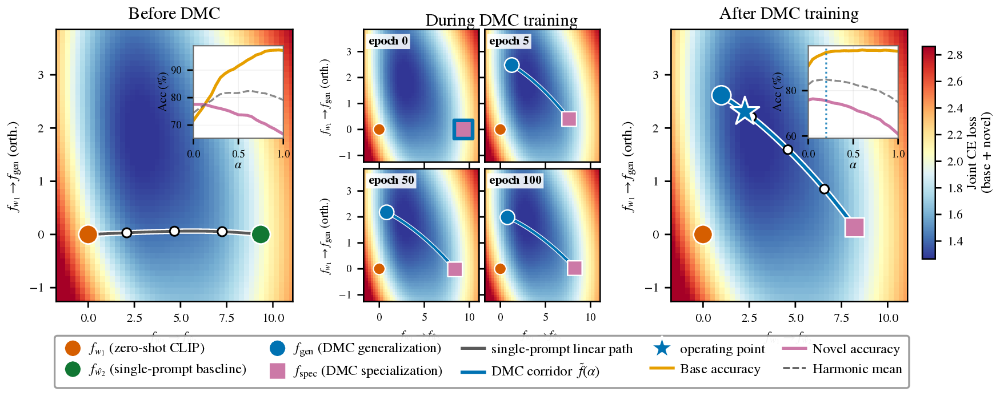
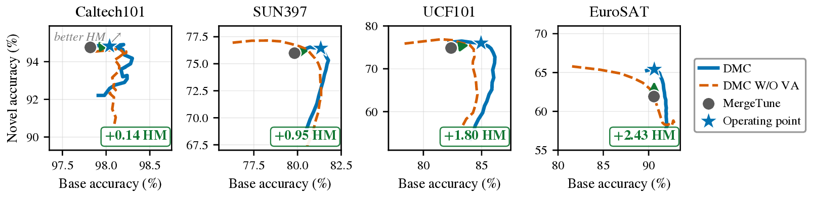

Prompt learning on CLIP trades accuracy on unseen classes for accuracy on the training classes, because a single prompt has to follow two gradients that point in nearly opposite directions. DMC gives each objective its own prompt, couples the two through a low-loss linear corridor in text-feature space, and deploys one point on that corridor, at the inference cost of a single prompt.
The trade-off
We tune CLIP's text prompt on the base half of each dataset's classes and test on both halves. Averaged over 11 datasets, CoOp gains 13.4 points on base classes and loses 11.0 on novel ones. The harmonic mean ends where zero-shot CLIP started.
Why a better loss does not fix it
Methods such as KgCoOp and MergeTune add a regularizer \(\mathcal{R}\) that pulls the prompt back toward CLIP's zero-shot text features. When one prompt \(\mathbf{c}\) carries both terms, every stationary point of \(\mathcal{L}_{\mathrm{CE}} + \lambda\mathcal{R}\) satisfies
No step from there improves both objectives, and changing \(\lambda\) slides the solution along the trade-off rather than past it. The opposition shows up in practice: at the converged single-prompt model, the cosine \(\gamma\) between the two gradients is negative on every dataset and baseline we measured.
Swapping the regularizer does not help either. Seven alternatives on the same single prompt, among them Fisher weighting, prompt-space EWC and zero-shot distillation, gained at most 0.40 HM on Caltech101 and Flowers102, about what retuning \(\lambda\) gives.
Two prompts and a corridor
DMC starts two prompts from the same fine-tuned checkpoint. The specialization prompt \(\mathbf{c}_{\mathrm{spec}}\) is trained by cross-entropy, the generalization prompt \(\mathbf{c}_{\mathrm{gen}}\) by the anchor. The only term that couples them is a corridor: every normalized mixture of their text features must classify base images well.
The corridor is drawn in text-feature space because logits are linear in the text features, so every point of the segment is itself a classifier. A segment between prompts would not have this property. After training we fix \(\alpha = 0.20\) for all datasets and merge the features once.
Visual Anchor
Freed from the anchor, cross-entropy tends to push base classes apart and erase the smaller similarities CLIP keeps between related classes. The Visual Anchor matches CLIP's zero-shot class-similarity distribution on each training image with a KL term that never reads the label. It is a refinement: in our ablation it helps on two of four datasets.
Class-permutation invariance
A regularizer that depends on which class is which leaks base-class identity into the prompt. Under idealized assumptions, Fano's inequality turns that leak into a lower bound on the drop in novel accuracy. We rely on the bound for the direction of the effect, not its size. Both regularizers in DMC are invariant.
Results
Across 11 datasets, DMC raises the average HM of MergeTune, the single-prompt method it builds on, from 76.45 to 77.23 with CoOp and from 76.43 to 76.76 with KgCoOp.


Is it the extra prompt?
DMC trains two prompts of 2K parameters each. A single CoOp prompt with 8K parameters still trails it on all four datasets we tested, by 1.1 to 5.1 HM. Two prompts trained without the anchor score below MergeTune, because both collapse onto the same base-specialized solution.
Where it does not help
DMC needs its two endpoints to stay apart after training. On the prompt-tuning baselines they do. On MMA, whose adapter is small, both endpoints collapse onto the same classifier and the corridor shrinks to a point. MMA with DMC still improves on MMA with MergeTune, but both trail the published MMA result. Separation is necessary, not sufficient.
The operating point is also chosen offline. The best \(\alpha\) differs across datasets and cannot be read from base classes alone, which leaves a small gap to the best point on each corridor.
Citation
@inproceedings{marouf2026dmc,
title = {Decoupled Mode Connectivity for Base-to-Novel
Generalization in Vision-Language Models},
author = {Marouf, Imad Eddine and Oublal, Khalid and
Tartaglione, Enzo and Lathuili{\`e}re, St{\'e}phane},
booktitle = {Advances in Neural Information Processing Systems (NeurIPS)},
year = {2026}
}